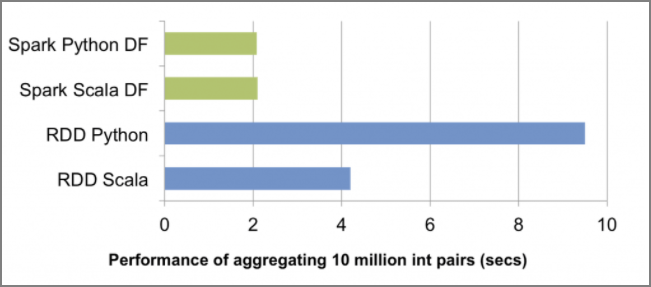

PySparkでUDFを使用する場合の性能面の注意点
PythonとJVM間で通信のラウンドトリップが発生ということに注意。
参照：O’Reilly Japan - 初めてのSpark https://www.oreilly.co.jp/books/9784873117348/
3.3 DataFrameによるPySparkの高速化
DataFrameとCatalyst Optimizer（そしてProject Tungsten）が際立っているのは、最適化されていないRDDのクエリに比べてPySparkのクエリのパフォーマンスを向上させてくれることです。次の図にあるとおり、DataFrameが登場するまでRDDに対するPythonのクエリの速度はScalaの同じクエリに比べて半分以下になることもめずらしくありません。通常このクエリのパフォーマンスの低下は、PythonとJVM間でのコミュニケーションのオーバーヘッドによるものです。

DataFrameの登場は、Pythonでのパフォーマンスを大きく改善させたのみならず、Python、Scala、SQL、Rのパフォーマンスを同等にしたのです。DataFrameでPySparkが大幅に高速になるとはいっても、例外があることは忘れないようにしてください。最もよくあるのはPythonのUDFを使う場合で、こうするとPythonとJVMとの間で通信のラウンドトリップが生じます。これはRDDで演算処理を行うのと同じような最悪のケースになりうるので、注意が必要です。
Catalyst OptimizerのコードベースはScalaで書かれていますが、PythonもSparkのパフォーマンス最適化の恩恵が受けられます。基本的には、PySparkでのDataFrameでクエリを大きく高速化してくれているコードは、Pythonで書かれた2,000行程度のラッパーに過ぎません。
関連しているかもしれない記事
- EMRのエラーをS3のログから確認
- EMR Pysparkでデータフレームを縦に連結してデータを増幅させる
- Redshiftのdecimalの数値計算時の注意点
- Redshiftのskew tableを確認する
- Redshiftのサンプルデータベース（TICKIT）を作る